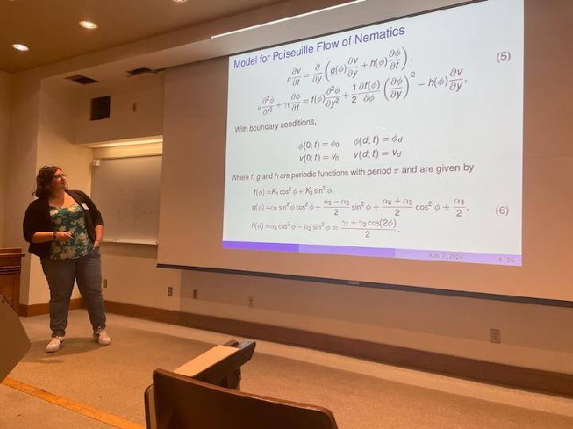

Teaching
At the University of Kansas, as a Graduate Teaching Assisstant, I have been involved in the instruction of a variety of courses varying from Algebra to Calculus III and in a variety of roles from instructor of record to lab instructor.
At Murray State University, as a Graduate Teaching Assisstant, I was the instructor of record for a section of Intermediate Algebra for each of the four (4) academic semesters between Spring 2016 and Fall 2017.
Research
|  |
I am a mathematics PhD student at the University of Kansas. My advisor is Yannan Shen. In collaboration with Weishi Liu, we investigate the dynamics of the Ericksen-Leslie system with Poiseuille flow of nematic liquid crystals.
- Master Thesis: Distributive lattice models of fundamental symmetric polynomials for the type Bn Weyl groups advised by Dr. Robert G. Donnelly
- Invited Speaker. KUMUNU-ISU, University of Kansas. April 2024
- Title: ''Stationary Solutions of the Ericksen-Leslie System''
- IMA Math-to-Industry Bootcamp, University of Minnesota (Virtual) . July 2022
- Our capstone project for the bootcamp focused on the prediction of prepayment due to turnover in the mortgage market. A report containing the details and results of the project may be found here. This was in collaboration with Chris Jones and U.S. Bank.
- Poster at SIAM Central States Section, University of Kansas (Virtual) . October 2021
- Title: ''Least Squares Spectral Element Method and Dirac Equation''
- Speaker at KYMAA, Berea College. March 2017
Other
Service and Outreach
President of the Math Graduate Student Organization (AY 22-23).
Co-founder and co-organizer of the Kansas Math Graduate Student Conference (Fall 2021 - Present).
Vice-President of the Math Graduate Student Organization (AY 21-22).
Co-organizer for the 5th grade workshop in conjunction with Math and Stats Awareness Month (Spring 2020 - Present).
Treasurer of the Math Graduate Student Organization (AY 20-21).
Mentor to a junior graduate student as a part of the Mentor/Mentee program organized by the Math Graduate Student Organization.